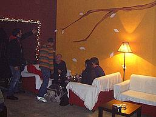

que
ofereix la possibilitat de gaudir de petites activitats culturals
mentre s'assaboreix el seu bon cafè

La
Cantina de la Lluna art-cafè:
carrer Ramon Batlle, 17 · Sant Andreu de Palomar (08030
BCN)
horari:
de dilluns a divendres de 6 de la tarda
a 9 del vespre (els
divendres fins a la matinada,
algun amb DJ's)
· dissabtes, diumenges i festius tancat